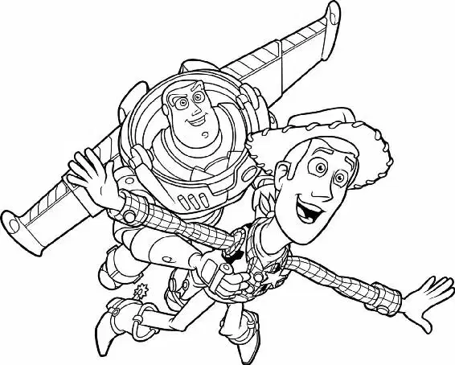

HOOOONK! Woody and Buzz turned around just in time to see the moving truck driving toward them. With a scream, they ducked. As soon as the truck passed, Buzz began to chase it. “Come on!” he called to Woody.
Back at Sid’s house, Scud was lying on the porch, but he perked up at the sight of the two little action figures running down the street. He bared his teeth and growled.
Buzz ran closer to the truck, with Woody just a few steps behind him. A strap dangled off the back of the truck. Buzz leaped… and caught it! Grunting, he climbed onto the bumper. Then Woody lunged for the strap—and missed.
“You can do it, Woody!” Buzz called out.
Woody tried again. This time he caught hold of the strap. “I made it!” He began to clamber up to the bumper, but suddenly he heard a furious barking. Looking over his shoulder, Woody could see Scud racing after the truck—the dog was closing in fast!
“Aaaaaaah!” Woody yelled as Scud’s jaws chomped on his leg. He kicked at the dog with his other foot. “Get away, you stupid dog! Down! Down!” Scud continued to tug, pulling Woody down to the end of the strap.
“Hold on, Woody!” Buzz cried.
“I can’t do it!” Woody gasped. “Take care of Andy for me!”
“Noooooo!” Bravely, Buzz leaped onto Scud’s snout and pulled on the dog’s eyelids. Scud yelped and let go of Woody. Dog and spaceman were left behind as the truck continued forward.
Thinking quickly, the cowboy scrambled up the strap and onto the truck’s bumper. He unlocked the back door. When the moving truck screeched to a halt at a red light, the door flew upward, with Woody dangling from the handle.
Inside the truck, he spotted what he was looking for: several boxes scrawled with the words ANDY’S TOYS. Woody jumped down and yanked one open. Mr. Potato Head, Rex, and some of the other toys squinted in the sudden burst of sunlight.
“Are we there already?” Rex asked.
“Woody!” Slinky cried. “How’d you—”
But Woody was busy rummaging through another box. “There you are!” He pulled out RC, along with the remote. Then he ran to the back of the van and kicked the toy car down into the street.
“He’s at it again!” Rex wailed.
Woody turned on the remote and steered the car toward Buzz. Scud had shaken the space ranger off, and now Buzz was trapped under a parked car. When the toy car zoomed up, Buzz jumped on. Using the remote control, Woody then guided RC back toward the moving truck. As the red light turned green and the truck started forward, RC and Buzz were close behind. But so was Scud!
Meanwhile, the toys in the moving truck didn’t understand what was happening. All they saw was Woody throwing RC out the back of the truck.
“Get him!” Mr. Potato Head shouted, leading a mob of angry toys out of the box.
Rocky the wrestler grabbed Woody and spun him overhead. Woody was still holding the remote control, and the toy car began to spin, too, matching Woody’s movements. Luckily, it was perfect timing—RC and Buzz spun away from Scud just as he was about to chomp down on them.
Rocky threw Woody to the floor, and the car resumed its straight course toward the truck. Scud gave chase as Buzz and RC drove right into a busy intersection. The toys made it through, but a traffic jam trapped Scud among a jumble of cars.
In the truck, the mob of toys lifted Woody up. “Toss him overboard!” Mr. Potato Head shouted.
“No, wait!” Woody pleaded. “You don’t understand. Buzz is out there! We’ve gotta help him!”
But the toys didn’t believe him. “So long, Woody!” Mr. Potato Head sneered as the toys threw Woody out the back of the truck.
Woody hit the ground hard. A horn blared as a car swerved to avoid running over him. Shaken, he tried to stand up just as Buzz and RC came barreling toward him. They scooped him up and kept driving.
“Thanks for the ride,” Woody said, still holding the remote. “Now let’s catch up to that truck!” He flipped a switch on the remote from ON to TURBO. The toy car roared toward the moving truck.
Lenny was watching the action out the back of the truck when he spotted Woody and Buzz chasing after them. “Guys! Woody’s riding RC! And Buzz is with him!”
Bo Peep peered through Lenny’s lenses. “It is Buzz!” she said. “Woody was telling the truth!”
“What have we done?” cried Slinky.
“Rocky!” Bo Peep ordered. “The ramp!” The wrestler ran toward a lever and pulled, releasing a loading ramp mounted on the back of the truck.
“Hold on to my tail!” Slinky woofed. Mr. Potato Head and Rex grabbed on to his tail, and Slinky jumped onto the ramp and held out his paw to Woody.
As RC neared the moving truck, Woody handed the remote to Buzz and grabbed Slinky’s paw.
“That a boy, Slink!” Mr. Potato Head cheered. But suddenly, RC began to slow down and swerve. As the moving truck pulled ahead, Slinky’s middle stretched out… and out.
“Woody!” shouted Slinky.
“Speed up!” Woody ordered Buzz.
“The batteries! They’re running out!”
Slinky’s spring was stretched as far as it could go. His paw slipped out of Woody’s hand and he snapped back into the truck, scattering the toys like bowling pins.
RC coughed and choked, then sputtered to a stop. Woody and Buzz watched helplessly as the moving truck drove on without them. Buzz threw down the remote.
“Great!” Woody cried in frustration. Buzz sighed, then jumped to his feet and grabbed the sheriff’s sleeve. “Woody! The rocket!”
Woody stared at the rocket still taped to Buzz’s back. “The match!” Woody shouted. Smiling, he pulled out the kitchen match Sid had stuck in his holster earlier. “Yes! Thank you, Sid!” Woody rushed around to the rocket and struck the match. He was just about to light the fuse when a car whizzed over them. A gust of wind blew out the flame. Woody fell to his knees and pounded the street with his fists. “No, no, nooooooo!”
Unable to watch Woody’s despair, Buzz bowed his head. Suddenly, the sunlight that was streaming through his helmet acted just like Sid’s magnifying glass. A tiny white-hot dot shone on the back of Woody’s hand.
Getting an idea, Woody jumped up, grabbed Buzz’s helmet, and aligned it so that the pinpoint of concentrated sunlight hit the tip of the rocket’s fuse. “Hold still, Buzz,” he ordered. At last, the fuse lit.
“You did it!” Buzz cried. “Next stop—Andy!” Woody jumped back onto RC. Suddenly, he stopped smiling.
“Wait a minute,” he said. “I just lit a rocket. Rockets explode!”
And at that moment, the rocket ignited, blasting Woody and Buzz down the street so fast that RC flew inches above the asphalt. Woody struggled to hang on.
Soon the moving truck came back into sight. The rocket was so strong that it began to lift Buzz, Woody, and RC off the ground. Woody managed to hang on—but not for long. He lost his grip, and the toys in the moving truck managed to scatter just as RC hurtled into the back of the truck. The rocket—along with Buzz and Woody—flew higher and higher into the sky.
“Ahhh!” Woody hollered. “This is the part where we blow up!”
“Not today!” Buzz shouted. He pressed a button on his chest and his toy wings sprang open, cutting the electrical tape and separating him from the rocket.
As the rocket exploded just above them, Woody covered his eyes and prepared to fall. But Buzz used his body like a glider, and suddenly he and Woody were soaring.
“Buzz! You’re flying!” exclaimed Woody.
“This isn’t flying,” replied Buzz. “This is falling—with style!”
“Ha, ha!” Woody cheered. “To infinity… and beyond!”
With easy confidence, Buzz swooped under some power lines and drifted gracefully toward the moving truck. But then he flew over it.
“Uh, Buzz? We missed the truck!” shouted Woody.
“We’re not aiming for the truck!” Buzz replied.
Buzz tilted a little to the left, spun them in a loop, then sailed down through the open sunroof of the Davises’ van. Before anyone could notice, Buzz and Woody landed in an open box in the backseat—right next to Andy.
As Andy turned away from the window he had been looking out of, he discovered Buzz and Woody lying in the box, their faces arranged in the exact same smiles they’d worn the first day he had laid eyes on them.
“Hey!” Andy exclaimed. “Wow!”
“What is it?” his mom called from the front seat.
“Woody! Buzz!” Andy cried.
“Oh, great, you found them,” Mrs. Davis said. “Where were they?”
“Here!” Andy replied. “In the car!”
Mrs. Davis chuckled and shook her head. “See? What did I tell you? Right where you left them.”
Andy hugged both toys. Tucked in his arms, Buzz and Woody exchanged knowing smiles.
